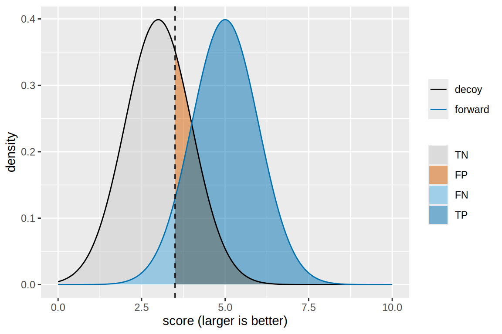
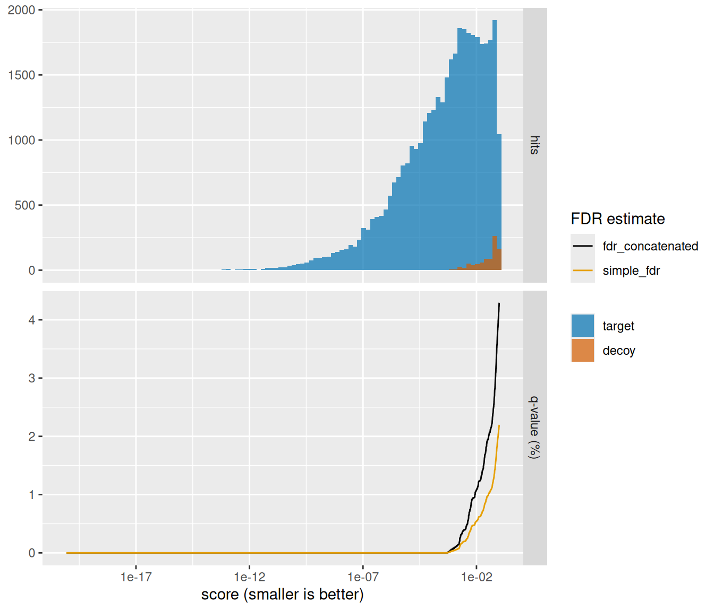
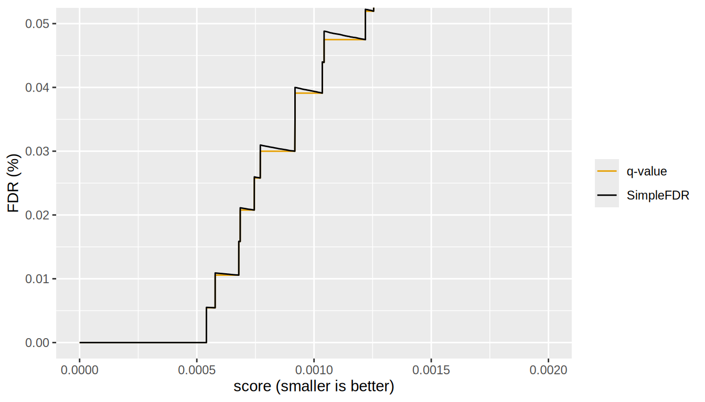

Target Decoy FDR
Here we describe how you can estimate the false discovery rate (FDR) when matching your spectra against a FASTA sequence database using spectra search engines such as Mascot or Comet. The sequence database contains forward sequences and the same number of reverse sequences.
The data
The data needs to have two columns, one with a label, to distinguish targets and decoys, the other with a score. Then you also need to know if a larger score or a smaller score is better. In our example data, we have two scores: score and score2. While the score is better if it is smaller (e.g., posterior error probability), score2 is better if it is larger.
library(dplyr)
library(prozor)
data(fdr_sample)
knitr::kable(head(fdr_sample))| protein_id | score | score2 | |
|---|---|---|---|
| 28064 | sp|P00738|HPT_HUMAN | 0.0030141 | 2.520847 |
| 47194 | sp|P19823|ITIH2_HUMAN | 0.0008878 | 3.051662 |
| 8916 | sp|Q86WI1|PKHL1_HUMAN | 0.0350109 | 1.455797 |
| 37157 | sp|P04003|C4BPA_HUMAN | 0.0018141 | 2.741330 |
| 60963 | sp|P01876|IGHA1_HUMAN | 0.0000013 | 5.897889 |
| 89689 | sp|P01042|KNG1_HUMAN | 0.0000000 | 12.305967 |
What is also required is that the number of Targets and Decoys are the same. This is given for mass spectrometry database searches. Our dataset here is already truncated at a 5% FDR. Therefore the number of decoys is much smaller.
table(grepl("^REV_", fdr_sample$protein_id))
FALSE TRUE
39142 858 In our example, we will use the package to filter the data further for a 1% FDR.
Computing the FDR can be done by calling the function compute_fdr(). plot_fdr() then shows the score distributions of targets and decoys (top) and the q-values of the two FDR estimates (bottom). The score axis is logarithmic because smaller scores are better.
fdr1 <- compute_fdr(fdr_sample$score, grepl("^REV_", fdr_sample$protein_id), larger_better = FALSE)
plot_fdr(fdr1)
The output is a named list which can be easily converted into a data frame. We next will briefly discuss the elements of the output.
knitr::kable(head(data.frame(fdr1)))| larger_better | order | decoy_hit | score | fdr_concatenated | simple_fdr | q_value_fdr_concatenated | q_value_simple_fdr |
|---|---|---|---|---|---|---|---|
| FALSE | 287 | FALSE | 0 | 0 | 0 | 0 | 0 |
| FALSE | 3581 | FALSE | 0 | 0 | 0 | 0 | 0 |
| FALSE | 29584 | FALSE | 0 | 0 | 0 | 0 | 0 |
| FALSE | 26559 | FALSE | 0 | 0 | 0 | 0 | 0 |
| FALSE | 15524 | FALSE | 0 | 0 | 0 | 0 | 0 |
| FALSE | 30840 | FALSE | 0 | 0 | 0 | 0 | 0 |
Types of FDR
We define
* false positives (FP) as the number of passing decoy assignments
* true positives (TP) as the number of passing forward hits.FDR of a concatenated target-decoy search
Which is the “Fraction of incorrect assignments above score threshold”. The multiplier 2 is needed here since we assume that also the forward sequences have false assignments.
\[ FDR_{concatenated} = \frac{2 \cdot FP}{TP + FP} \]
This is taken from the reference by (Elias and Gygi 2007). It is often called the false positive rate (FPR), which (Storey and Tibshirani 2003) defines differently. Kaell points out that this quantity actually should be named FDR and that “Many proteomics papers incorrectly refer to this quantity as the false positive rate.” compute_fdr() therefore returns it as fdr_concatenated.
Simple FDR
“The FDR associated with a particular score threshold is defined as the expected percentage of accepted PSMs that are incorrect, where an accepted PSM is one that scores above the threshold (Many proteomics papers incorrectly refer to this quantity as the false positive rate).” ((Käll et al. 2007))
The Simple FDR introduced by ((Käll et al. 2007)) is defined by :
\[ SimpleFDR = \frac{FP}{TP} \]
“For a given score threshold, we count the number of decoy PSMs above the threshold and the number of target PSMs above the threshold. We can now estimate the FDR by simply computing the ratio of these two values (SimpleFDR).”(Käll et al. 2007)
fdr_curves <- data.frame(
score = rep(fdr1$score, 2),
fdr = 100 * c(fdr1$simple_fdr, fdr1$q_value_simple_fdr),
curve = rep(c("SimpleFDR", "q-value"), each = length(fdr1$score))
)
ggplot(fdr_curves, aes(x = score, y = fdr, colour = curve)) +
geom_line() +
coord_cartesian(xlim = c(0, 0.002), ylim = c(0, 0.05)) +
scale_colour_manual(values = c(SimpleFDR = "black", "q-value" = "#E69F00")) +
labs(x = "score (smaller is better)", y = "FDR (%)", colour = NULL)
Although the score is getting better (smaller) the FDR may increase since the number of TP in the denominator decreases while the number of FP stays the same. Therefore Storey and Tibshirani proposed the q-value, “which in our case is defined as the minimal FDR threshold at which a given PSM is accepted”(Käll et al. 2007).
Getting the score for an FDR.
Most frequently you will need to get the score for an FDR in order to filter your data. To report your data with an FDR of 1% instead of 5% you can execute this code:
(score05G <- predict_score_fdr(fdr1, q_value = 0.05, method = "fdr_concatenated"))[1] 0.09991592dim(filter(fdr_sample, score <= score05G))[1] 40000 3(score01G <- predict_score_fdr(fdr1, q_value = 0.01, method = "fdr_concatenated"))[1] 0.008509834dim(filter(fdr_sample, score <= score01G))[1] 29180 3(score01K <- predict_score_fdr(fdr1, q_value = 0.01, method = "simple_fdr"))[1] 0.03394749dim(filter(fdr_sample, score <= score01K))[1] 34876 3The order column
Since the scores are sorted to compute the FDR, we return also the order column. This column can be used to align the ID’s with the scores.
knitr::kable(head(data.frame(id = fdr_sample$protein_id[fdr1$order], fdr1)))| id | larger_better | order | decoy_hit | score | fdr_concatenated | simple_fdr | q_value_fdr_concatenated | q_value_simple_fdr |
|---|---|---|---|---|---|---|---|---|
| sp|P04264|K2C1_HUMAN | FALSE | 287 | FALSE | 0 | 0 | 0 | 0 | 0 |
| sp|P04264|K2C1_HUMAN | FALSE | 3581 | FALSE | 0 | 0 | 0 | 0 | 0 |
| sp|P35527|K1C9_HUMAN | FALSE | 29584 | FALSE | 0 | 0 | 0 | 0 | 0 |
| sp|P04264|K2C1_HUMAN | FALSE | 26559 | FALSE | 0 | 0 | 0 | 0 | 0 |
| sp|P02768|ALBU_HUMAN | FALSE | 15524 | FALSE | 0 | 0 | 0 | 0 | 0 |
| sp|P04264|K2C1_HUMAN | FALSE | 30840 | FALSE | 0 | 0 | 0 | 0 | 0 |
For convenience we provide the function compute_fdr_with_id() which integrates the reordering of the ID’s.
fdr1 <- compute_fdr_with_id(fdr_sample$score, fdr_sample$protein_id, decoy = "^REV_", larger_better = FALSE)
knitr::kable(head(data.frame(fdr1)))| larger_better | order | decoy_hit | score | fdr_concatenated | simple_fdr | q_value_fdr_concatenated | q_value_simple_fdr | id |
|---|---|---|---|---|---|---|---|---|
| FALSE | 287 | FALSE | 0 | 0 | 0 | 0 | 0 | sp|P04264|K2C1_HUMAN |
| FALSE | 3581 | FALSE | 0 | 0 | 0 | 0 | 0 | sp|P04264|K2C1_HUMAN |
| FALSE | 29584 | FALSE | 0 | 0 | 0 | 0 | 0 | sp|P35527|K1C9_HUMAN |
| FALSE | 26559 | FALSE | 0 | 0 | 0 | 0 | 0 | sp|P04264|K2C1_HUMAN |
| FALSE | 15524 | FALSE | 0 | 0 | 0 | 0 | 0 | sp|P02768|ALBU_HUMAN |
| FALSE | 30840 | FALSE | 0 | 0 | 0 | 0 | 0 | sp|P04264|K2C1_HUMAN |
Session Info
sessionInfo()R version 4.6.2 (2026-10-29)
Platform: x86_64-pc-linux-gnu
Running under: Ubuntu 26.04.1 LTS
Matrix products: default
BLAS: /usr/lib/x86_64-linux-gnu/openblas-pthread/libblas.so.3
LAPACK: /usr/lib/x86_64-linux-gnu/openblas-pthread/libopenblasp-r0.3.32.so; LAPACK version 3.12.0
locale:
[1] LC_CTYPE=C.UTF-8 LC_NUMERIC=C LC_TIME=C.UTF-8
[4] LC_COLLATE=C.UTF-8 LC_MONETARY=C.UTF-8 LC_MESSAGES=C.UTF-8
[7] LC_PAPER=C.UTF-8 LC_NAME=C LC_ADDRESS=C
[10] LC_TELEPHONE=C LC_MEASUREMENT=C.UTF-8 LC_IDENTIFICATION=C
time zone: UTC
tzcode source: system (glibc)
attached base packages:
[1] stats graphics grDevices utils datasets methods base
other attached packages:
[1] prozor_0.4.0 dplyr_1.2.1 ggplot2_4.0.4
loaded via a namespace (and not attached):
[1] vctrs_0.7.3 cli_3.6.6 knitr_1.52 rlang_1.3.0
[5] xfun_0.62 otel_0.3.0 generics_0.1.4 S7_1.0.0
[9] jsonlite_2.0.0 labeling_0.4.3 glue_1.8.1 htmltools_0.5.9
[13] scales_1.4.0 rmarkdown_2.32 grid_4.6.2 tibble_3.3.1
[17] evaluate_1.0.5 fastmap_1.2.0 yaml_2.3.12 lifecycle_1.0.5
[21] compiler_4.6.2 RColorBrewer_1.1-3 pkgconfig_2.0.3 lattice_0.23-1
[25] farver_2.1.2 digest_0.6.39 R6_2.6.1 tidyselect_1.2.1
[29] pillar_1.11.1 magrittr_2.0.5 Matrix_1.7-6 withr_3.0.3
[33] tools_4.6.2 gtable_0.3.6 References
Elias, Joshua E, and Steven P Gygi. 2007. “Target-Decoy Search Strategy for Increased Confidence in Large-Scale Protein Identifications by Mass Spectrometry.” Nature Methods 4 (3): 207–14.
Käll, Lukas, John D Storey, Michael J MacCoss, and William Stafford Noble. 2007. “Assigning Significance to Peptides Identified by Tandem Mass Spectrometry Using Decoy Databases.” Journal of Proteome Research 7 (01): 29–34.
Storey, John D, and Robert Tibshirani. 2003. “Statistical Significance for Genomewide Studies.” Proceedings of the National Academy of Sciences 100 (16): 9440–45.